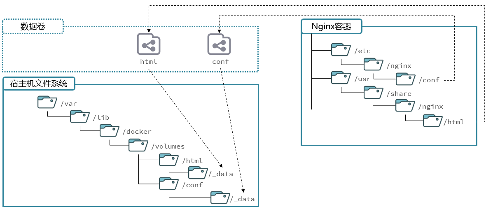

Docker指北
Docker
快速上手
- docker镜像交流社区：https://hub.docker.com/
1 | |
docker run -d：创建并运行一个容器，-d则是让容器以后台进程运行--name mysql: 给容器起个名字叫mysql，你可以叫别的-p 3306:3306: 设置端口映射。- 容器是隔离环境，外界不可访问。但是可以将宿主机端口映射容器内到端口，当访问宿主机指定端口时，就是在访问容器内的端口了。
- 容器内端口往往是由容器内的进程决定，例如MySQL进程默认端口是3306，因此容器内端口一定是3306；而宿主机端口则可以任意指定，一般与容器内保持一致。
- 格式：
-p 宿主机端口:容器内端口，示例中就是将宿主机的3306映射到容器内的3306端口
-e TZ=Asia/Shanghai: 配置容器内进程运行时的一些参数- 格式：
-e KEY=VALUE，KEY和VALUE都由容器内进程决定 - 案例中，
TZ=Asia/Shanghai是设置时区；MYSQL_ROOT_PASSWORD=123是设置MySQL默认密码
- 格式：
mysql: 设置镜像名称，Docker会根据这个名字搜索并下载镜像- 格式：
REPOSITORY:TAG，例如mysql:8.0，其中REPOSITORY可以理解为镜像名，TAG是版本号 - 在未指定
TAG的情况下，默认是最新版本，也就是mysql:latest
- 格式：
命令 说明 文档地址 docker pull 拉取镜像 docker pull docker push 推送镜像到DockerRegistry docker push docker images 查看本地镜像 docker images docker rmi 删除本地镜像 docker rmi docker run 创建并运行容器（不能重复创建） docker run docker stop 停止指定容器 docker stop docker start 启动指定容器 docker start docker restart 重新启动容器 docker restart docker rm 删除指定容器 docs.docker.com docker ps 查看容器 docker ps docker logs 查看容器运行日志 docker logs docker exec 进入容器 docker exec docker save 保存镜像到本地压缩文件 docker save docker load 加载本地压缩文件到镜像 docker load docker inspect 查看容器详细信息 docker inspect 默认情况下，每次重启虚拟机我们都需要手动启动Docker和Docker中的容器。通过命令可以实现开机自启：
1
2
3
4
5# Docker开机自启
systemctl enable docker
# Docker容器开机自启
docker update --restart=always [容器名/容器id]1
sudo docker exec -it nginx bash
深入了解
容器提供程序的运行环境，但是程序运行产生的数据、程序运行依赖的配置都应该与容器解耦。
数据卷（volume）是一个虚拟目录，是容器内目录与宿主机目录之间映射的桥梁。

将容器中的目录与宿主机目录关联起来，称为挂载。此时，操作宿主机中的对应文件目录，就是操作容器内的对应文件目录
/var/lib/docker/volumes这个目录就是默认的存放所有容器数据卷的目录，其下再根据数据卷名称创建新目录，格式为/数据卷名/_data。
命令 说明 文档地址 docker volume create 创建数据卷 docker volume create docker volume ls 查看所有数据卷 docs.docker.com docker volume rm 删除指定数据卷 docs.docker.com docker volume inspect 查看某个数据卷的详情 docs.docker.com docker volume prune 清除数据卷 docker volume prune 如果容器已经创建了，是没有办法再去挂载的，所以要在容器创建的时候就指明挂载。
创建容器的过程中，数据卷会自动创建。
1
docker run -d --name nginx -p 80:80 -v html:/usr/share/nginx/html nginx
给Docker配置代理服务器 https://ruohai.wang/202406/docker-config-to-use-proxy-server/
Docker指北
https://strive-c.github.io/2023/10/16/Docker指北/